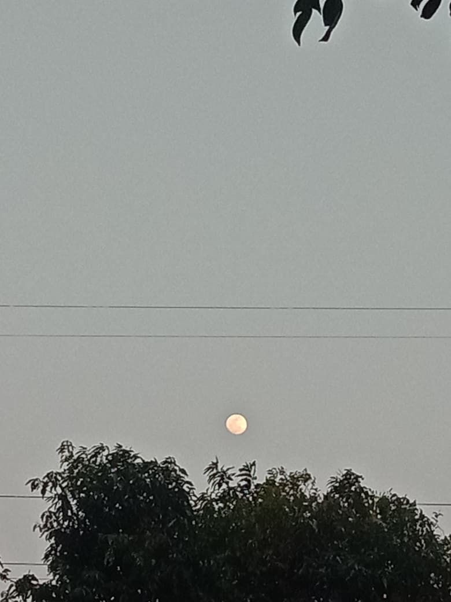
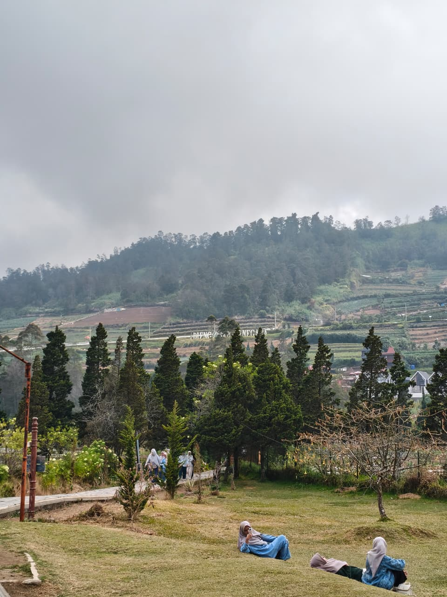
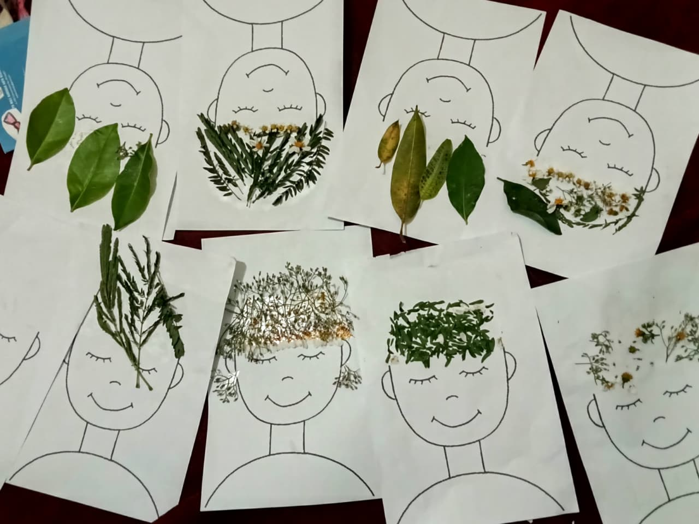

Qonit Sabrina Az-hari
Desainer Web | Pengembang | Kreator Konten
Desainer Web | Pengembang | Kreator Konten
Halo! Saya Qonit Sabrina Az-hari, seorang kreator visual yang memiliki ketertarikan mendalam pada keindahan alam dan seni. Melalui lensa kamera dan sentuhan kreativitas, saya berusaha mengabadikan momen-momen sederhana menjadi karya yang bermakna.
Portofolio saya berfokus pada fotografi pemandangan, dokumentasi perjalanan, serta eksplorasi seni visual organik. Saya percaya bahwa setiap sudut pandang memiliki cerita uniknya sendiri yang patut untuk dibagikan dan dinikmati.


